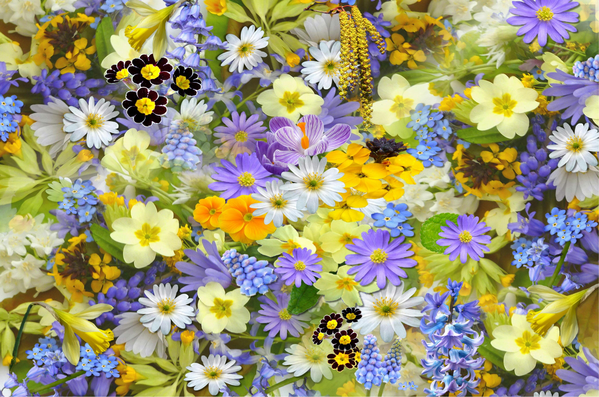

My First Blog Post
August 25, 2025
Flowers are one of nature’s most beautiful creations, admired for their colors, fragrance, and charm.
They brighten up gardens, parks, and even our homes, spreading positivity wherever they bloom. Beyond beauty, flowers hold cultural meanings, symbolizing love, hope, purity, and friendship. From roses that speak of romance to lilies that symbolize peace, every flower tells a story. No matter the season, flowers remind us of life’s simple joys and the elegance of nature.